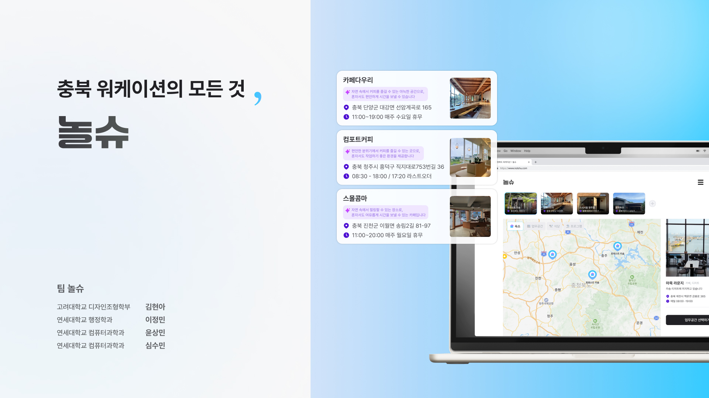

Projects
Here are the projects I have led or contributed to

“A Safe Meeting Platform for Youth” – Tech for Impact: Youth Voice Team
This project is a youth-focused information platform built with a React-based frontend and a lightweight Python backend for web crawling and GPT-powered summarization. There is no dedicated backend server; instead, the system uses simple Python scripts to collect and summarize relevant web data, combined with a user-friendly interface designed to support safe and accessible youth gatherings.
